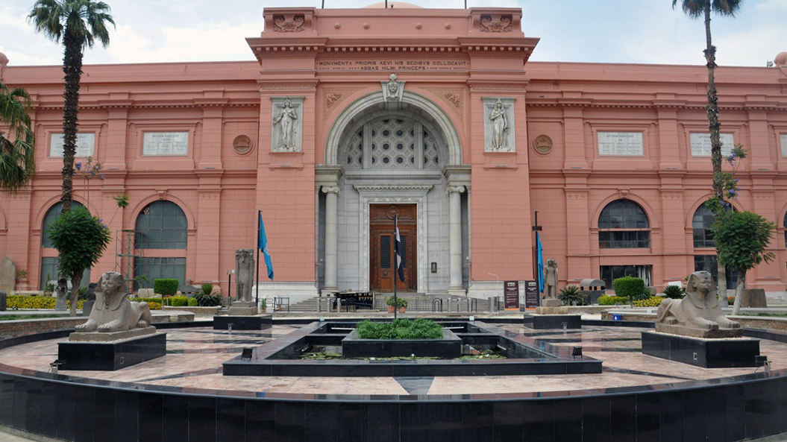
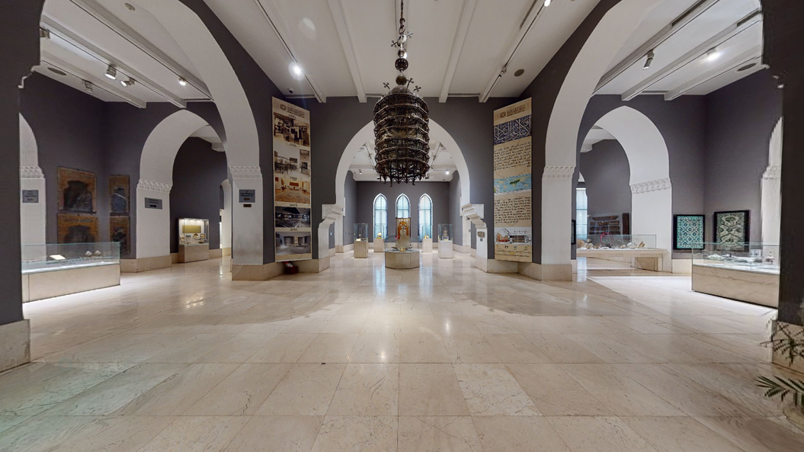
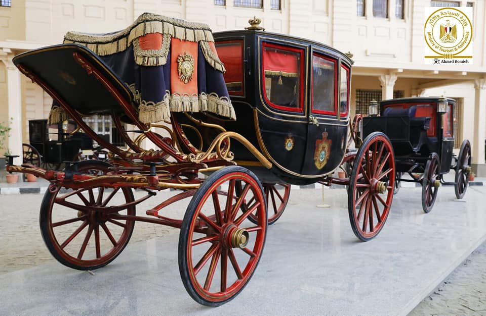
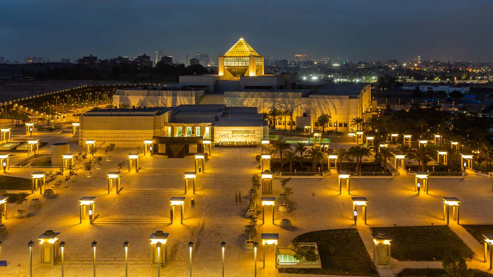
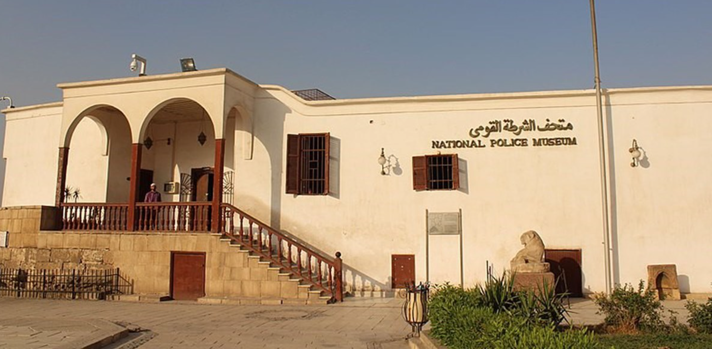
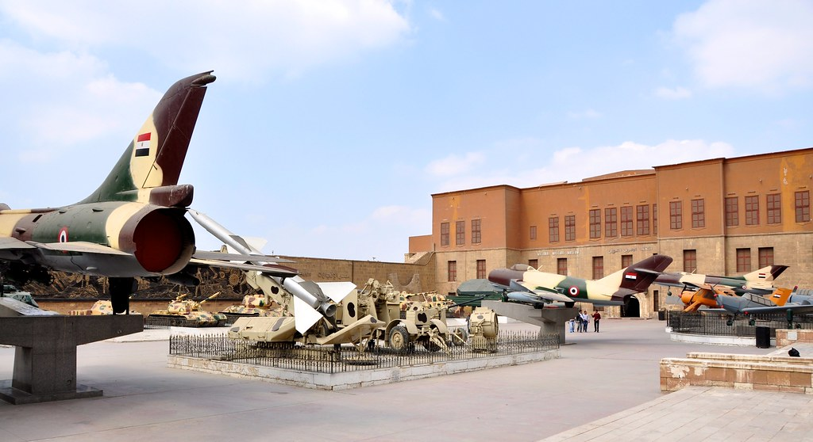

المتحف المصري
 هو أحد أكبر وأشهر المتاحف العالمية، و يقع في قلب العاصمة المصرية القاهرة بالجهة الشمالية لميدان التحرير ، يعود تاريخ إنشائه إلى عام 1835م. وكان موقعه حينها بحديقة الازبكية ، حيث ضم وقتها عدداً كبيرًا من الآثار المتنوعة، ثم نقل بمحتوياته إلى قاعة العرض الثانية بقلعة صلاح الدين حتى فكر عالم المصريات الفرنسي (اوجوست مارييت) الذي كان يعمل في متحف اللوفر في افتتاح متحف يعرض فيه مجموعة من الآثار على شاطئ النيل عند بولاق ، وعندما تعرضت هذه الآثار لخطر الفيضان تم نقلها إلى ملحق خاص بقصر الخديوي إسماعيل بالجيزة، ثم جاء عالم المصريات (جاستون ماسبيرو) و افتتح عام 1902. يعتبر المتحف المصري من أوائل المتاحف في العالم التي أسست لتكون متحفًا عامًا على عكس المتاحف التي سبقته .
المتحف الاسلامي

يوجد المتحف في القاهرة و يعد أكبر متحف إسلامي بالعالم حيث يضم مجموعات متنوعة من الفنون الإسلامية من الهند والصين وإيران مرورا بفنون الجزيرة العربية والشام ومصر وشمال أفريقيا والأندلس.
أصدر الخديوى توفيق أمر إلى نظارة الأوقاف سنه ١٨٨١م لجمع كل التحف الفنية النفيسة الموجودة في المساجد والبيوت الإسلامية فظهر لأول مرة في العالم متحف الآثار الإسلامية وكان عبارة عن غرفة واحده سمح للجمهور بزيارتها لدراسة ما بها من آثار، وفى عام ١٨٨٤م أصبح مسجد الحاكم بأمر الله هو مقر لدار الآثار العربية وتشرف علية لجنه حفظ الآثار.
يقع متحف الفن الإسلامي في منطقة باب الخلق، في شارع بور سعيد، بمواجهة مديرية أمن القاهرة.
بدأت فكرة إنشاء متحف للفنون والآثار الإسلامية في عصر الخديوي إسماعيل سنة 1869، وتم تنفيذ الفكرة في عصر الخديوي توفيق سنة 1880، عندما قام فرانتز باشا بجمع التحف الأثرية التي ترجع إلى العصر الإسلامي في الإيوان الشرقي لجامع الحاكم بأمر الله.
وفي عام 1882 كان عدد التحف الأثرية التي تم جمعها 111 تحفة، وتم بعد ذلك بناء مبنى صغير في صحن جامع الحاكم أطلق عليه اسم «المتحف العربي» تحت إدارة فرانتز باشا الذي ترك الخدمة سنة 1892، وتم افتتاح مبنى المتحف الحالي في عهد الخديوي عباس حلمي الثاني في 28 ديسمبر 1903، ثم تغير اسم الدار سنة 1951 إلي «متحف الفن الإسلامي».
وفى عام 1982-1983 تم تطويير المتحف واضيفت إليه حديق متخفيه وقد فتح باب جانبى يؤدى إلى الحديق المتحفية. ومن الاضافات التي تمت أثناء عمليات التطوير قاعة لمكتبة المتحف اسفلها قاعة للطفل بالإضافة إلى قاعة خصصت لعرض مجموعة من النسيج والسجاد
متحف المركبات

يُعد متحف المركبات الملكية الذي يقع بالقرب من جامع السلطان أبو العلا في منطقة بولاق أبو العلا واحداً من أعرق المتاحف النوعية على مستوى العالم؛ حيث هيئ خصيصا لعرض وحفظ التراث الثقافي الخاص بالمركبات الملكية التي ترجع لعصر أسرة محمد علي وكل ما يتعلق بها، كما يسلط الضوء على الاهتمام بتربية الخيول في هذه الآونة.
ترجع فكرة إنشاء مبنى المتحف إلى عهد الخديوي إسماعيل الذي حكم مصر فيما بين عامي (1863-1879م)، فهو أول من فكر في إنشاء مبنى خاص بالمركبات الخديوية والخيول، سمي في بداية الأمر باسم مصلحة الركائب الخديوية"، واستمر هذا الاسم حتى عام 1922م في عهد الملك فؤاد الأول (1917-1936م)، وأصبح باسم " إدارة الاسطبلات الملكية". وكانت هذه المصلحة محط اهتمام القصر الملكي آنذاك؛ حيث وفر لها الخبراء المتخصصين، فضلاً عن العمال المهرة، وقد تم تحويل المبنى إلى مُتحف تاريخي بعد إنتهاء ثورة 1952م.
متحف القومي

يحتوي المتحف القومي للحضارة المصرية على أكثر من 50 ألف قطعة أثرية من بينها تابوت الكاهن "نجم عنخ" وأثاث مقبرة "سن نجم" الجنائزي، رئيس العمال في عهد الملك رمسيس الثاني ، وقلادة الأميرة نفروبتاح، ومجموعة أواني وتمائم للملك تحتمس الرابع بجانب تمثال للإله "نيلوس" من العصر اليوناني ومصحف شريف يعود إلى القرن التاسع عشر.
كما ان قاعة المومياوات بالمتحف هي عنصر جذب رئيسي للزوار ، حيث تضم عدد كبير من مومياوات أشهر الملوك والملكات مثل سقنن رع وتحتمس الثالث والملكة حتشبسوت ورمسيس الثاني ورمسيس الثالث وسيتي الأول وأحمس نفرتاري.
يُعتبر المتحف القومي للحضارة المصرية المتحف الأول من نوعه في مصر والعالم العربي، فهو يُعد مجمعاً حضارياً عالمياً متكاملاً يُتيح لزائريه فرصة للإبحار في رحلة عبر التاريخ للتعرف على الحضارات المصرية المتعاقبة.
بدأت فكرة إنشاء المتحف حين أعلنت منظمة الأمم المتحدة للتربية والعلم والثقافة (اليونسكو)، بُناءً على طلب الحكومة المصرية، عن حملة دولية لإنشاء متحف النوبة بأسوان، والمتحف القومي للحضارة المصرية بالقاهرة عام 1982.
تم وضع حجر الأساس عام 2002 في قلب مدينة الفسطاط، أول وأقدم العواصم الإسلامية في أفريقيا، تعثرت أعمال الإنشاء حتى انتهت تماماً وتم افتتاح قاعة للعرض المؤقت عن الحرف المصرية عبر العصور المختلفة عام 2017. و تفضل فخامة رئيس الجمهورية بافتتاح قاعة العرض المركزي واستقبال 22 مومياء ملكية تم نقلها من المتحف المصري بالتحرير في موكب مهيب عام 2021.
متحف القومي للحضاره
 متحف الشرطة القومي الموجود هو أحد متاحف قلعة صلاح الدين الأيوبي بالقاهرة ويقع بالجزء الشمالي من القلعة ، يرتكز المبنى على برج السباع الذي عثر عليه أثناء إنشاء المتحف، وجاءت تسمية هذا البرج لوجود نقوش بارزة لعدد من السباع في حالة قتال على الإطار العلوي للبرج، مما يرجح نسبته إلى الظاهر بيبرس، وهو البرج الوحيد الباقي من أبراج القلعة المملوكية حتى الآن. افتتح متحف الشرطة يوم 25 يناير عام 1986م بحضور الرئيس الراحل محمد حسنى مبارك واللواء أحمد رشدي وزير الداخلية آنذاك وكان الافتتاح متوافقا مع الاحتفال بعيد الشرطة فى ذلك العام.
متحف الشرطه القومي
 متحف الشرطة القومي الموجود هو أحد متاحف قلعة صلاح الدين الأيوبي بالقاهرة ويقع بالجزء الشمالي من القلعة ، يرتكز المبنى على برج السباع الذي عثر عليه أثناء إنشاء المتحف، وجاءت تسمية هذا البرج لوجود نقوش بارزة لعدد من السباع في حالة قتال على الإطار العلوي للبرج، مما يرجح نسبته إلى الظاهر بيبرس، وهو البرج الوحيد الباقي من أبراج القلعة المملوكية حتى الآن. افتتح متحف الشرطة يوم 25 يناير عام 1986م بحضور الرئيس الراحل محمد حسنى مبارك واللواء أحمد رشدي وزير الداخلية آنذاك وكان الافتتاح متوافقا مع الاحتفال بعيد الشرطة فى ذلك العام.
متحف جاير أندرسون
 يسمى ببيت الكريتلية أو بيت الكريدلية أو الجريدلية أو سبيل، يتكون البيت من منزلين يرجعان للعصر العثماني في القرنين السادس عشر والسابع عشر الميلادي وقد تم دمجهم في منزل واحد؛ المنزل الأول أنشأه المعلم عبد القادر الحداد سنة (947هـ/ 1545م)، والذي فى تاريخ لاحق انتلقت ملكيته إلى السيدة/ آمنه بنت سالم.
والمنزل الثاني أنشأه الحاج/ محمد بن سالم بن جلمام الجزار سنة (1041هـ/ 1631م)، وتعاقبت الأسر على سكنه حتى سكنته سيدة من جزيرة كريت فعرف المنزل ببيت الكريتلية نسبة إليها. ويقع بيت الكريتلية في أحد أعرق شوارع القاهرة القديمة شارع وميدان أحمد بن طولون في حي السيدة زينب.
يسمى ببيت الكريتلية أو بيت الكريدلية أو الجريدلية أو سبيل، يتكون البيت من منزلين يرجعان للعصر العثماني في القرنين السادس عشر والسابع عشر الميلادي وقد تم دمجهم في منزل واحد؛ المنزل الأول أنشأه المعلم عبد القادر الحداد سنة (947هـ/ 1545م)، والذي فى تاريخ لاحق انتلقت ملكيته إلى السيدة/ آمنه بنت سالم.
والمنزل الثاني أنشأه الحاج/ محمد بن سالم بن جلمام الجزار سنة (1041هـ/ 1631م)، وتعاقبت الأسر على سكنه حتى سكنته سيدة من جزيرة كريت فعرف المنزل ببيت الكريتلية نسبة إليها. ويقع بيت الكريتلية في أحد أعرق شوارع القاهرة القديمة شارع وميدان أحمد بن طولون في حي السيدة زينب.
متحف مطار القاهره الدولي صاله2
 بدأت فكرة إقامة متحف في صالة 2 بمطار القاهرة الدولي في عام 2020م ، وقد اُقيم المُتْحَف في عام 2021م بالتعاون بين كلٍ من وزارة السياحة والآثار ووزارة الطيران المدني على مساحة تبلُغ حوالي 100 متر .
يُعبِّر العرض المُتْحَفي عن لمسات مضيئة في تاريخ مِصر على مر عصورها؛ حيث يعرض المُتْحَف قطع أثرية فريدة تُبرِز المميزات الفنية والتاريخية لكل حقبة بدايةً من العصور المِصرية القديمة بالإضافة إلى إبراز سمات الفنون الرومانية والقبطية والإسلامية وفنون العصر الحديث، هذا فضلًا عن قطع تُبرز كينونة مِصر كمهد لكافة الأديان السماوية والطوائف
يضم حوالى 304 قطع أثرية فريدة تبرز المميزات الفنية والتاريخية لكل حقبة من حقب مصر التاريخية بداية من العصور المصرية القديمة مرورا بالعصر اليونانى الرومانى والقبطى والإسلامى وعصر الأسرة العلوية
بدأت فكرة إقامة متحف في صالة 2 بمطار القاهرة الدولي في عام 2020م ، وقد اُقيم المُتْحَف في عام 2021م بالتعاون بين كلٍ من وزارة السياحة والآثار ووزارة الطيران المدني على مساحة تبلُغ حوالي 100 متر .
يُعبِّر العرض المُتْحَفي عن لمسات مضيئة في تاريخ مِصر على مر عصورها؛ حيث يعرض المُتْحَف قطع أثرية فريدة تُبرِز المميزات الفنية والتاريخية لكل حقبة بدايةً من العصور المِصرية القديمة بالإضافة إلى إبراز سمات الفنون الرومانية والقبطية والإسلامية وفنون العصر الحديث، هذا فضلًا عن قطع تُبرز كينونة مِصر كمهد لكافة الأديان السماوية والطوائف
يضم حوالى 304 قطع أثرية فريدة تبرز المميزات الفنية والتاريخية لكل حقبة من حقب مصر التاريخية بداية من العصور المصرية القديمة مرورا بالعصر اليونانى الرومانى والقبطى والإسلامى وعصر الأسرة العلوية
متحف مطار القاهره صاله3
 تم افتتاح متحف مطار القاهرة الدوليّ بصالة 3 في عام 2016م.
وقد كان المُتْحَف آنذاك يشغل مساحة 60م2 تقريبًا، وكان يضُم عدد (38) قطعة أثرية. إلى أن جاء عام 2020م وتم نقل المُتْحَف من مكانه القديم إلى الطابق الرابع في نفس المبنى وذلك بهدف توسعته وعرض المزيد من القطع الأثرية، حيث أصبحت مساحته تشغل حوالي 150م2 تقريبًا.
تم افتتاح متحف مطار القاهرة الدوليّ بصالة 3 في عام 2016م.
وقد كان المُتْحَف آنذاك يشغل مساحة 60م2 تقريبًا، وكان يضُم عدد (38) قطعة أثرية. إلى أن جاء عام 2020م وتم نقل المُتْحَف من مكانه القديم إلى الطابق الرابع في نفس المبنى وذلك بهدف توسعته وعرض المزيد من القطع الأثرية، حيث أصبحت مساحته تشغل حوالي 150م2 تقريبًا.
متحف الامير محمد علي
 يسمى بقصر الأمير محمد علي بالمنيل أو قصر المنيل أو متحف قصر محمد علي بالمنيل أو متحف قصر المنيل ، يقع المتحف في قلب مدينة القاهرة وتحديداً بجزيرة منيل الروضة بالقرب من قصر العيني.
هو أحد قصور العهد الملكي في مصر ذات الطابع المعماري الخاص. بدء بناء القصر عام 1901، ويقع بجزيرة منيل الروضة بالقاهرة على مساحة 61711 متر² منها 5000 متر تمثل مساحة المباني. يعد القصر تحفة معمارية فريدة كونه يضم طرز فنون إسلامية متنوعة ما بين فاطمي ومملوكي وعثماني وأندلسي وفارسي وشامي، ويشتمل القصر على ثلاث سرايات هي: سراي الإقامة، وسراي الاستقبال، وسراي العرش، بالإضافة إلى المسجد، والمتحف الخاص، ومتحف الصيد، وبرج الساعة، ويحيط به سور على طراز أسوار حصون القرون الوسطى، فيما تحيط بسراياه من الداخل حدائق تضم مجموعة نادرة من الأشجار والنباتات، ويستخدم القصر حالياً كمتحف.
يسمى بقصر الأمير محمد علي بالمنيل أو قصر المنيل أو متحف قصر محمد علي بالمنيل أو متحف قصر المنيل ، يقع المتحف في قلب مدينة القاهرة وتحديداً بجزيرة منيل الروضة بالقرب من قصر العيني.
هو أحد قصور العهد الملكي في مصر ذات الطابع المعماري الخاص. بدء بناء القصر عام 1901، ويقع بجزيرة منيل الروضة بالقاهرة على مساحة 61711 متر² منها 5000 متر تمثل مساحة المباني. يعد القصر تحفة معمارية فريدة كونه يضم طرز فنون إسلامية متنوعة ما بين فاطمي ومملوكي وعثماني وأندلسي وفارسي وشامي، ويشتمل القصر على ثلاث سرايات هي: سراي الإقامة، وسراي الاستقبال، وسراي العرش، بالإضافة إلى المسجد، والمتحف الخاص، ومتحف الصيد، وبرج الساعة، ويحيط به سور على طراز أسوار حصون القرون الوسطى، فيما تحيط بسراياه من الداخل حدائق تضم مجموعة نادرة من الأشجار والنباتات، ويستخدم القصر حالياً كمتحف.